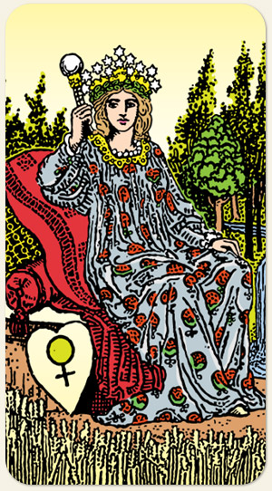

A fertilidade, a nutrição, a sensorialidade e a conexão com o mundo natural. O florescimento da vida em todas as suas formas. É o arquétipo da abundância que nos lembra que somos merecedores de conforto, beleza e prazer.
Positivo: Beleza, criatividade, bom uso dos recursos, dar forma ao reino, conduzir com amabilidade, maturidade feminina, capacidade de unir para produzir mais.
Negativo: Mulher poderosa e com todos os recursos, mas incapaz de servir e produzir coisas boas. Esterilidade, futilidade, ouro de tolo, beleza cênica, pessoa que sofre de fartura, tem tudo e procura algo para sofrer, tirania, mãe superprotetora.
Símbolos: Espelho de Vênus, Escudo, Campo de Trigo, Coroa, Cetro com Orbe, Romãs, Árvores, Cascata.
Cores: Amarelo, Vermelho, Azul, Verde, Branco e Cinza.
Elementos: Fogo e Espírito.